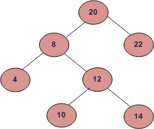

What is LCA in binary tree explain and how to find lca for two node in binary search tree
Answer:
LCA in binary tree:
- LCA stand for lowest common ancestor let's take their are two node n1 & n2 in Binary Tree T then their lcs is defined as the most closest(lowest) node of which both are descendants
- 
LCA of 10 and 14 is 12
LCA of 8 and 22 is 20
-
so we can see when we come down in the tree T the node which most lowest and descendants of both node . Here we can think every node is descendants of itself
-
Now lets' see how to solve this
- One thing is clear that we need to trasverse the tree and as it is bst it easy to do so during trasverse we use to find node n such that n1<n<n2 or n is equal to one of given node
- Trasverse the tree for each node
- check if node n is greater than both node then the lcs lies on left side
- if node n is greater than both nodes than lcs lies on right side
- otherwise that node is your lcs return that
NOTE :
- Tree node is it has data ,left ,right
- tree has both node n1 and n2 present
Pseudo code
- first check if node.data >n1 && node.data >n2 go to left
- if first condition is false the check if node.data <n1 && node.data <n2 go to right
- At last if both condition fail then return node
Complexity analysis:
Time complexity :O(h) h->height of tree .
Space complexity :O(h) recursive stack.